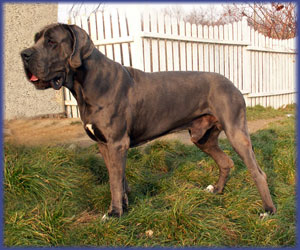
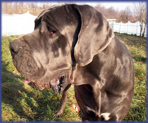

| LITTER "A" Perfect Dog, born: 21.05.2004 2/7 blue | |
| father IZYDOR Medium |
mother PERFECT BEAUTY PELARGONIA Balao |


ASTERIX AFRODYTA   ARIADNA
AMELKA & ASTERIX
ARIADNA
AMELKA & ASTERIX
 AMELKA - 8 weeks old   ARCI - 2 years old  ARABELLA - 7 months old | |